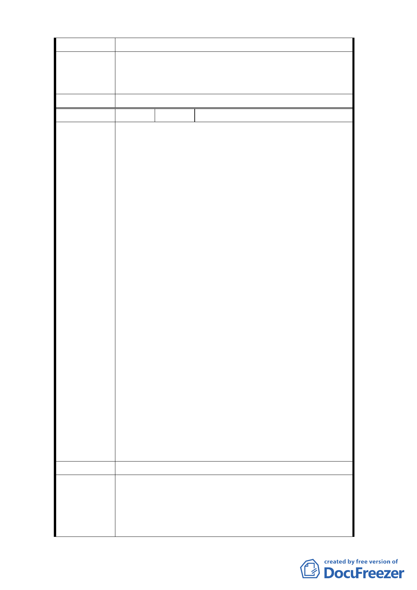

三、審查有進度要通知我們住戶。
有關地上物拆遷、安置補償事宜，後續將由開闢主管機
市府回應意見 關（工務局新工處）依相關法令辦理。
委 員 會 決 議 同市府回應意見。
編 號 4 陳情人 陳嘉彥等二人
一、本地區並非交通繁忙及交通流量很大之區域，且
附近居民及商業活動量少，停車位需求不大，且
已有中山足球場提供之停車位及玉門街、酒泉街
之路邊停車位已可滿足本區停車需求。
二、市府當初將本地區由第三種住宅區用地變更為商
三特區用地，其目的即是要繁榮本地區之經濟，
如走回頭路再變更為停廣用地，則勢必嚴重打擊
本區之經濟活動，本地區將永無翻身之機會，捷
運車站前商業用地所能創造之經濟效益及繁榮
本地區經濟遠比停廣用地效益大。
陳 情 理 由 三、本地區平時經濟活動少，白天市況不佳，晚上陰
暗漆黑，人口活動量少，台北市政府以辦理花博
會為藉口誇大花博會所能帶來的效益，採變更都
市計畫大動作實無必要，因為花博會是臨時性、
非常態性的活動，僅舉辦半年時間，到目前為止
台北市政府所引用許多數據資料多為預估值實
不可靠，僅以目前的門票預購數量為例就令人感
到不樂觀，如變更為停廣用地後，嗣花博會結束
後，本地區又將恢復為花博會前，市況不佳經濟
蕭條之原狀，空曠之廣場將加重本地區經濟蕭
條，因商業活動少，人口無法聚集，夜晚將更成
漆黑陰暗之狀況。
建 議 辦 法 反對變更為停廣用地。
1.本府就周邊都市計畫、地區現況及未來環境改善研
市府回應意見
析，建議調整為庫倫街南側增設5公尺道路用地，變
更庫倫街為25公尺寬計畫道路，未來並應配合地區交
通規劃進行開闢。即可達車流順暢、人行舒適、滿足
-5-